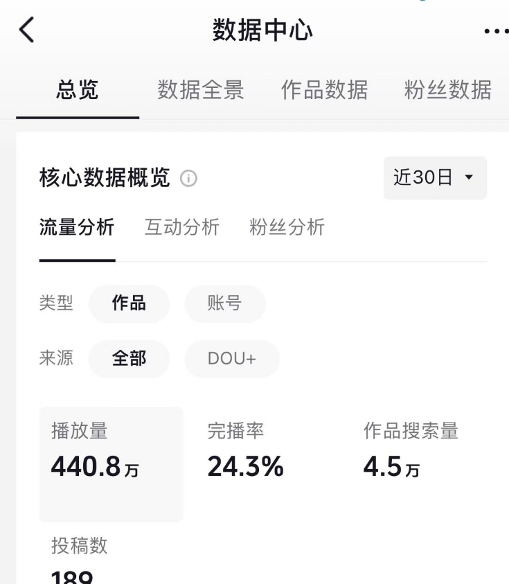

阅读作品数据时，先确认页面展示的是哪个账号、哪个时间范围，以及哪些作品。相同的指标名称，在不同统计范围下可能代表不同的数据集合。下面使用项目自带的示例截图，说明阅读顺序。
示例截图仅用于说明界面，不代表当前发布账号的实际经营数据。

单个数字只能回答一部分问题。比较之前，先确保统计口径一致。
如果某个指标发生变化，可以先记录内容主题、发布时段和展示范围，再结合后续几次观察进行判断。一次上涨或下降，都不足以单独证明某种方法一定有效。
这份示例展示了标题、段落、加粗、引用、列表和图片的组合方式。